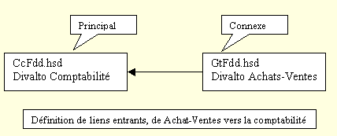

Pour définir des liens entre plusieurs dictionnaires, sélectionnez le choix Ajoutez un dictionnaire connexe du menu Edition.
Attention : En ajoutant des dictionnaires connexes, vous ne pouvez créer que des liens entrants vers le dictionnaire principal. Vous ne pouvez pas créer de liens sortants vers les dictionnaires connexes ni de liens entre les dictionnaires connexes.
Exemple

Remarques
Les liens sont toujours stockés dans le dictionnaire principal.
Pour définir des liens sortants d’un dictionnaire A vers un dictionnaire B, il faut donc inverser les rôles et que le dictionnaire B soit ouvert comme dictionnaire principal et que le dictionnaire A soit un dictionnaire connexe.
Dans l’exemple ci-dessus, pour définir des liens sortants depuis la comptabilité vers achats-ventes il faut ouvrir le dictionnaire de achats-ventes comme dictionnaire principal et le dictionnaire de la comptabilité comme dictionnaire connexe.